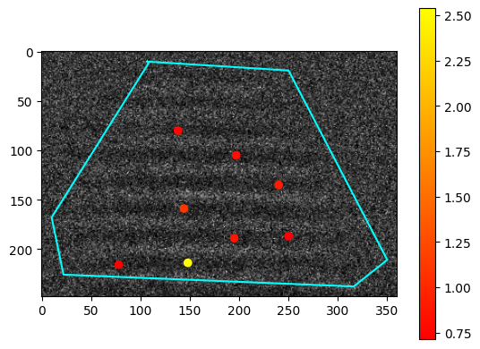
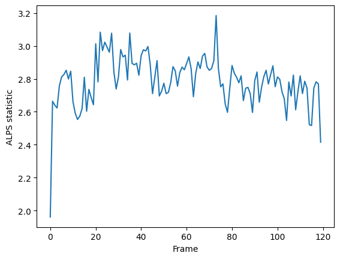
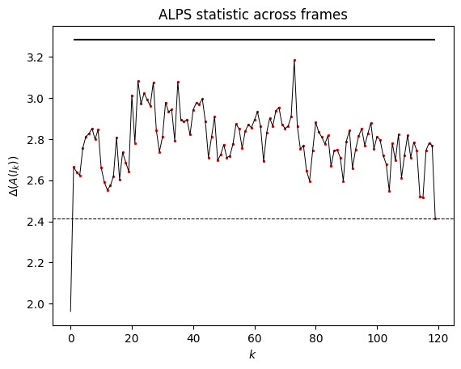

Examples
In the below, test_video.pkl is the output of the “identify_polygon” python script,
which allows choose your desired polygonal subregion.
from skimage import io, filters
import detectda as dtda
import numpy as np
import pickle
import matplotlib.pyplot as plt
import cv2
"""
Here we divide each pixel by 32 (div=32) and round to the nearest integer because of various properties
of the detector which captured the video. Outside of hypothesis testing context, it is fine to set div equal to
its default value of div=1!
"""
impol = dtda.ImageSeriesPickle('detectda/tests/test_video.pkl', div=32, n_jobs=2)
Calculate persistent homology
Fit the persistence diagrams for every image in the polygonal region of the test video. We found smoothing parameter of 2 worked well for these nanoparticle videos.
impol.fit(sigma=2)
Visualize the results of the fit
See where the homology generators appears and how long they live. Below, we see the raw image with the points of the 0th persistence diagram overlaid, after removing points with lifetimes less than thr.
impol.plot_im(25, thr=0.4, smooth=False)

Calculate summaries
Run these routines to get persistent entropy and the ALPS statistic
impol.get_pers_entr(neg=False)
impol.get_alps()
Plot the summaries
Plot the ALPS statistic across all the frames
plt.plot(impol.alps) #or impol.pers_entr
plt.xlabel('Frame')
plt.ylabel('Persistent entropy')

Hypothesis testing
Run hypothesis testing using the observed image series above, by generating 500 Monte Carlo noise images
G = open('detectda/tests/test_video_vacuum.pkl', 'rb')
tv_vacuum = pickle.load(G)['video']
impol_vac = dtda.VacuumSeries(tv_vacuum, observed_ImageSeries=impol, parametric=False, div=32)
impol_vac.fit(convert_to_int=True)
impol_vac.transform(500, "alps", conservative=True)
Plot the test results
Plot the results of the hypothesis testing
impol_vac.plot_hypo()
